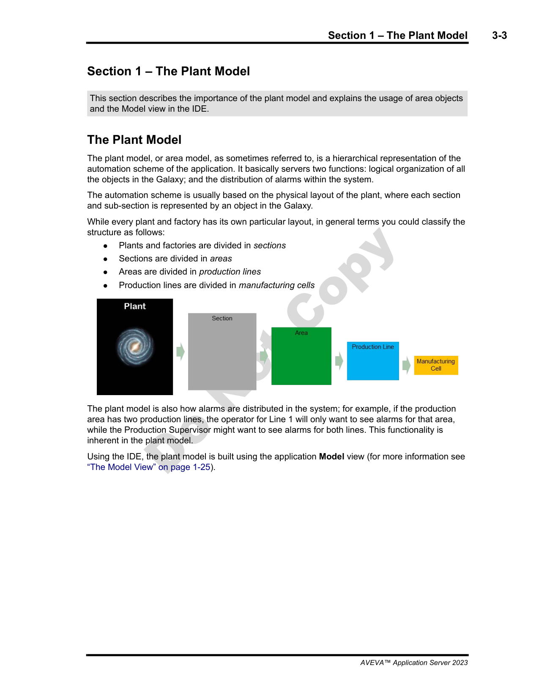
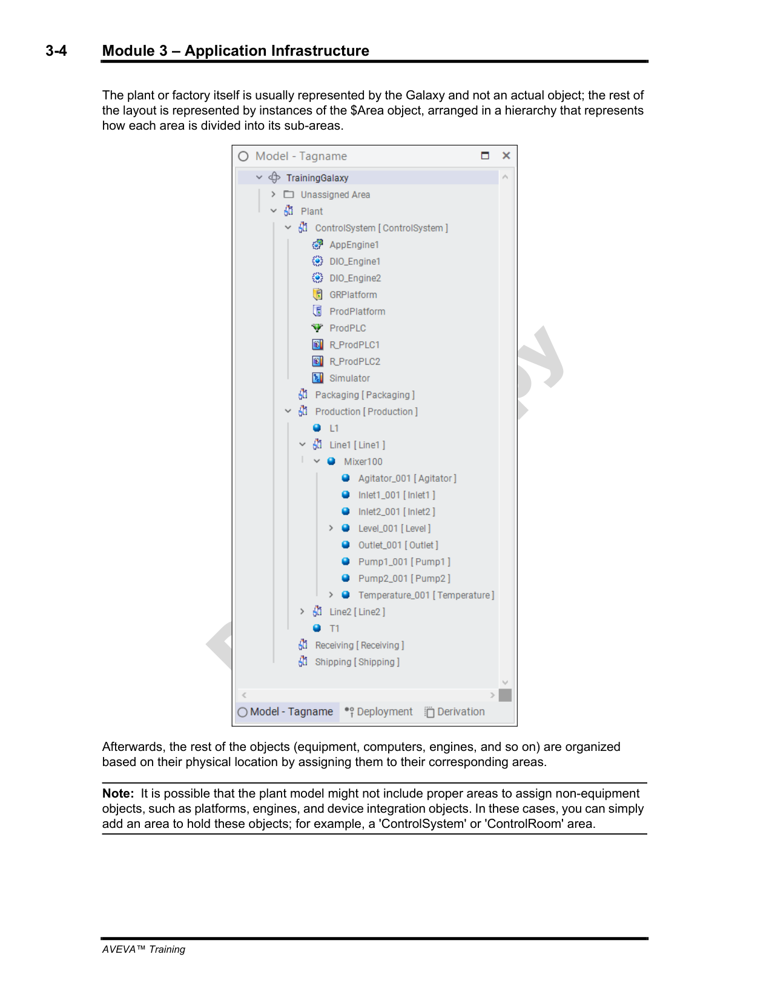
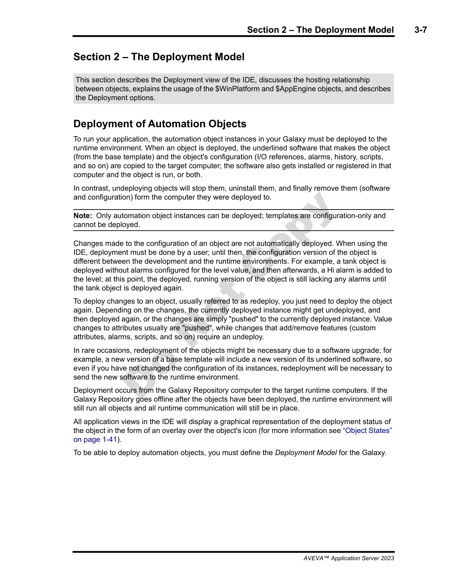
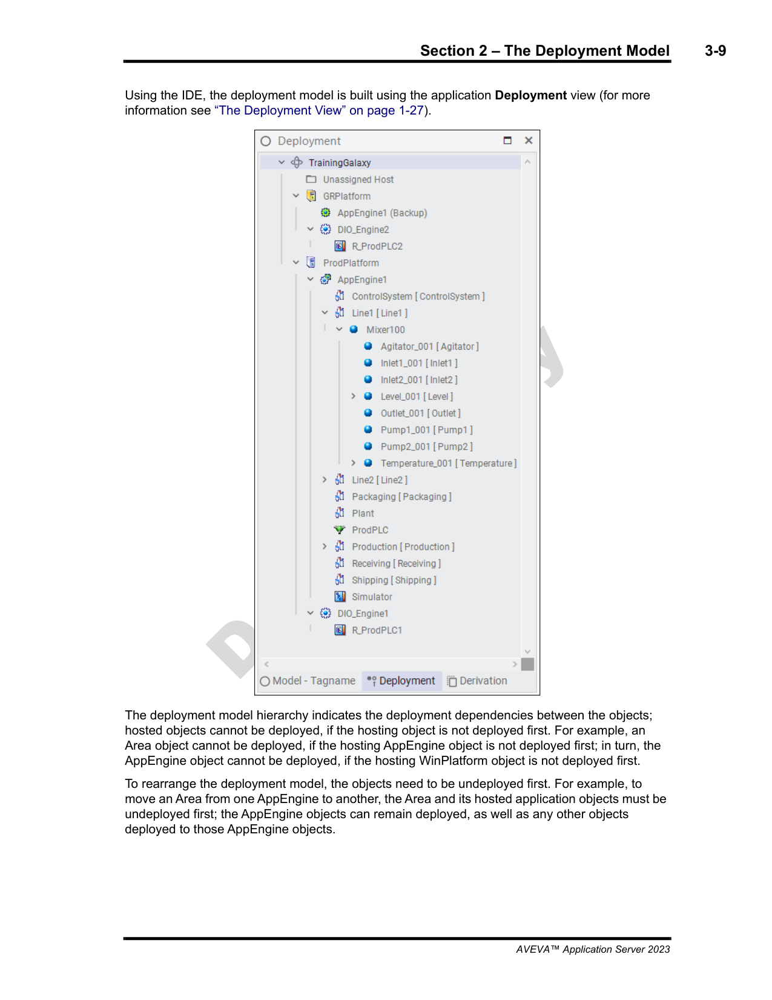

Source: AVEVA Application Server 2023 Training Manual, Module 3, Sections 1-2 (pages 3-3 to 3-12)
How Application Server organizes your plant into a logical hierarchy, and how objects move from design to live execution.
Reference: Module 3, Section 1 (pages 3-3 to 3-5)
The Plant Model organizes objects into a hierarchical tree. The training Galaxy demonstrates a typical five-level structure:
Plant ├── Sections │ ├── Areas │ │ ├── Production Lines │ │ │ └── Manufacturing Cells │ │ └── ... │ └── ... └── ...
| Hierarchy Level | Training Galaxy Example | Description |
|---|---|---|
| Plant | Plant | Top-level container representing the entire facility |
| Section | Production, Packaging | Major functional divisions within the plant |
| Area | ControlSystem | Specific process areas within a section |
| Production Line | Line1, Line2 | Individual production lines |
| Manufacturing Cell | Mixer100 | Specific equipment groups or cells on a line |
The exact hierarchy levels you use depend on your plant layout. The key principle: structure your Plant Model to mirror your physical plant so operators and engineers can navigate it intuitively.

One of the primary functions of the area hierarchy is alarm scoping. The hierarchy determines which alarms each user can see:
| User Role | Alarm Visibility |
|---|---|
| Operator | Sees only alarms for their own area — focused on the equipment they are responsible for |
| Supervisor | Sees all alarms across the entire plant — overview of all areas |
Reference: Module 3, Section 1 (pages 3-4 to 3-5)
In the IDE, the Plant Model is visible in the Model pane. The Model-Tagname view shows the full hierarchy of all objects in your Galaxy, organized by area. This is where you build, configure, and navigate your plant structure.

The training Galaxy organizes its objects as follows:
| Area | Contents |
|---|---|
| Unassigned Area | New objects that haven't been placed into the hierarchy yet — a temporary holding zone |
| Plant | Top-level area |
| ↳ ControlSystem | Control system objects |
| ↳ Production | Production-related areas |
| ↳ Line1 | Equipment on Production Line 1 (e.g., Mixer100, Mixer200) |
| ↳ Line2 | Equipment on Production Line 2 |
| ↳ Packaging | Packaging area equipment |
| ↳ Receiving | Receiving area — inbound materials |
| ↳ Shipping | Shipping area — outbound products |
Equipment objects (like Mixer100, Mixer200) are nested under their respective areas. You can see them in the Model-Tagname view when you expand each area node.
Reference: Module 3, Section 2 (pages 3-7 to 3-10)
Application Server uses a deliberate deployment model — changes don't go live automatically:
| Concept | Description |
|---|---|
| Deploy | Object configuration is sent to the target platform. The object starts executing at runtime. |
| Undeploy | Object is removed from the runtime environment. It stops executing. The object still exists in the Galaxy (IDE) but is not running. |
| Manual Update Required | When you change an object in the IDE, the changes are not automatically pushed to the running environment. You must manually redeploy for changes to take effect. |

$Area, $AppEngine, $WinPlatform) are base classes — they define how objects work. You must create an instance of the template and deploy the instance. Templates themselves are never deployed.
This is fundamental to how Application Server works:
When the Galaxy Repository (GR) is unavailable, already-deployed objects continue running normally on the AppEngines. The GR is only needed for development operations (deploy, undeploy, configuration changes). The runtime executes independently — this means a GR failure does not stop your plant from running.
Reference: Module 3, Section 2 (pages 3-8 to 3-10)
The Deployment View shows the hierarchy of platforms and engines that host your deployed objects. The training Galaxy demonstrates a typical multi-platform deployment:

The training Galaxy's deployment tree looks like this:
TrainingGalaxy
├── Unassigned Host
│
├── GRPlatform
│ ├── AppEngine1 Backup
│ └── DIO_Engine2
│ └── R_ProdPLC2
│
└── ProdPlatform
├── AppEngine1
│ ├── ControlSystem
│ │ └── ...
│ ├── Line1
│ │ └── Mixer100 / Mixer200 / ...
│ └── ...
└── DIO_Engine1
└── R_ProdPLC1
| Object | Purpose |
|---|---|
| GRPlatform | The platform hosting the Galaxy Repository. Also hosts AppEngine1 Backup (redundancy) and DIO_Engine2 for I/O communication with R_ProdPLC2. |
| ProdPlatform | The main production platform. Hosts AppEngine1 (which executes the plant objects: ControlSystem, Line1, Mixer100, etc.) and DIO_Engine1 for I/O communication with R_ProdPLC1. |
| AppEngine1 | The runtime engine that executes deployed objects — equipment, areas, and their logic. |
| DIO_Engine1 / DIO_Engine2 | Data I/O engines that handle communication with physical controllers (PLCs) via drivers. |
| R_ProdPLC1 / R_ProdPLC2 | Communication paths to the production PLCs — configured through the DIO engines. |
| AppEngine1 Backup | Redundant backup for AppEngine1 — provides failover capability. |
| Unassigned Host | Objects that haven't been assigned to a specific platform yet. |
Q1: What is the typical area hierarchy in the Plant Model, from top to bottom?
Plant → Sections → Areas → Production Lines → Manufacturing Cells. The hierarchy mirrors the physical plant layout.
Q2: What is the difference between alarm visibility for an operator versus a supervisor?
An operator sees only alarms for their own area — focused on the equipment they manage. A supervisor sees all alarms across the entire plant.
Q3: Can you deploy a template directly to a live runtime environment? Why or why not?
No. You can only deploy instances, not templates. Templates are base classes that define how objects work. You must create an instance of the template and deploy the instance.
Q4: If you make a change to an object in the IDE, does the change take effect at runtime immediately?
No. Changes are not automatically deployed. You must manually redeploy the object for the changes to take effect at runtime. This manual step exists for safety in production environments.
Q5: What happens to running deployed objects if the Galaxy Repository goes offline?
Already-deployed objects continue running normally on the AppEngines. The GR is only needed for development operations (deploy, undeploy, modify). A GR failure does not stop the plant from operating.
Q6: In the training Galaxy's deployment tree, what objects are hosted by ProdPlatform?
ProdPlatform hosts AppEngine1 (which executes ControlSystem, Line1, Mixer100, and other plant objects) and DIO_Engine1 (which communicates with R_ProdPLC1).
Q7: What is the hosting rule regarding deploying child objects?
A child object cannot be deployed unless its parent is deployed first. You must deploy top-down: platform first, then engines, then objects.
Click each answer to reveal it.
Next: Lesson 7 — Lab 3